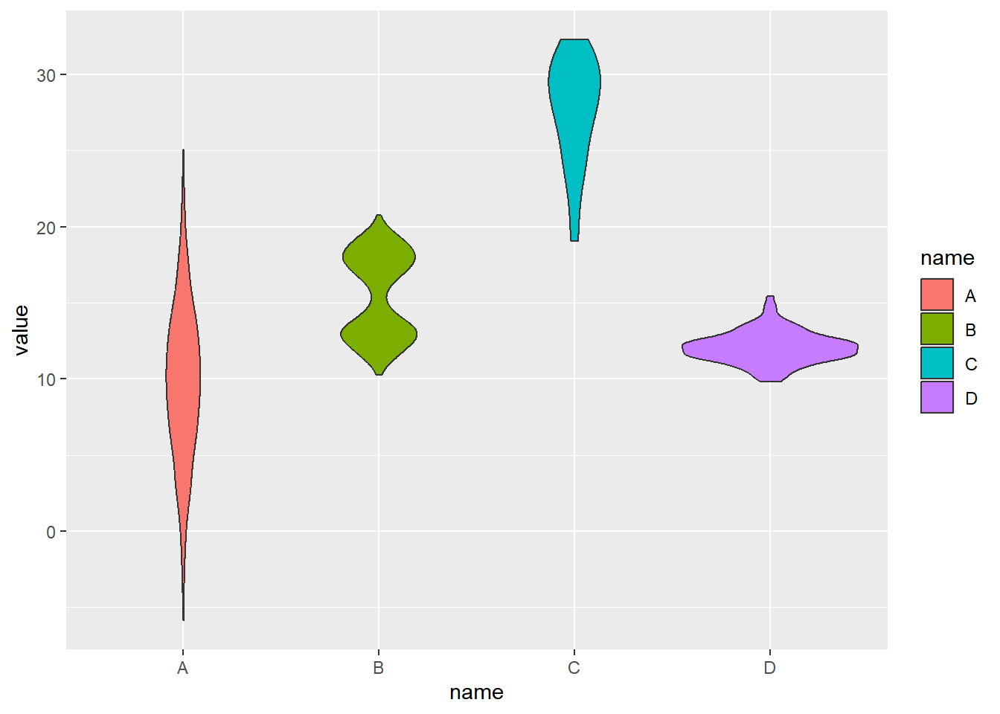
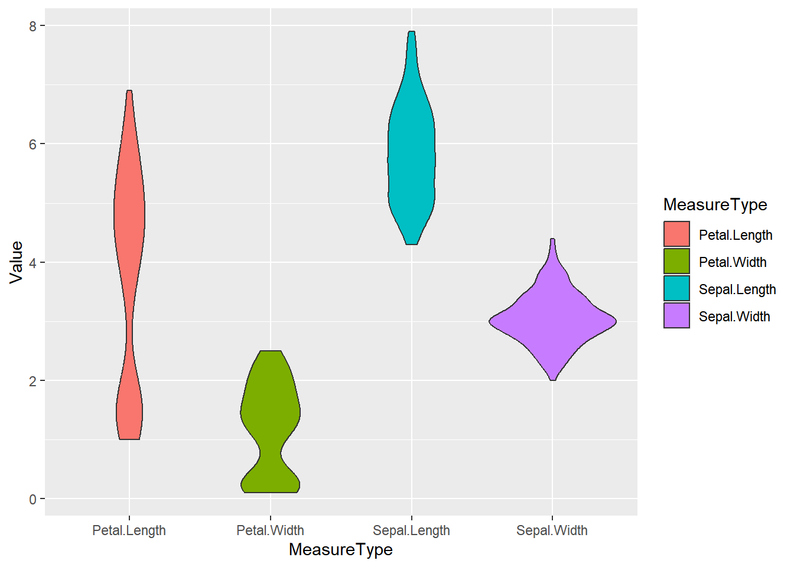
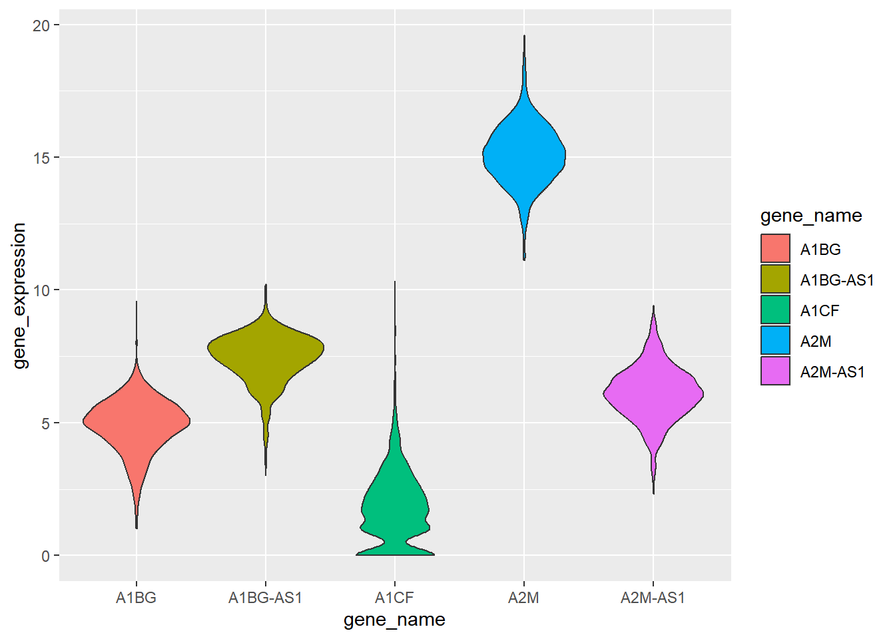
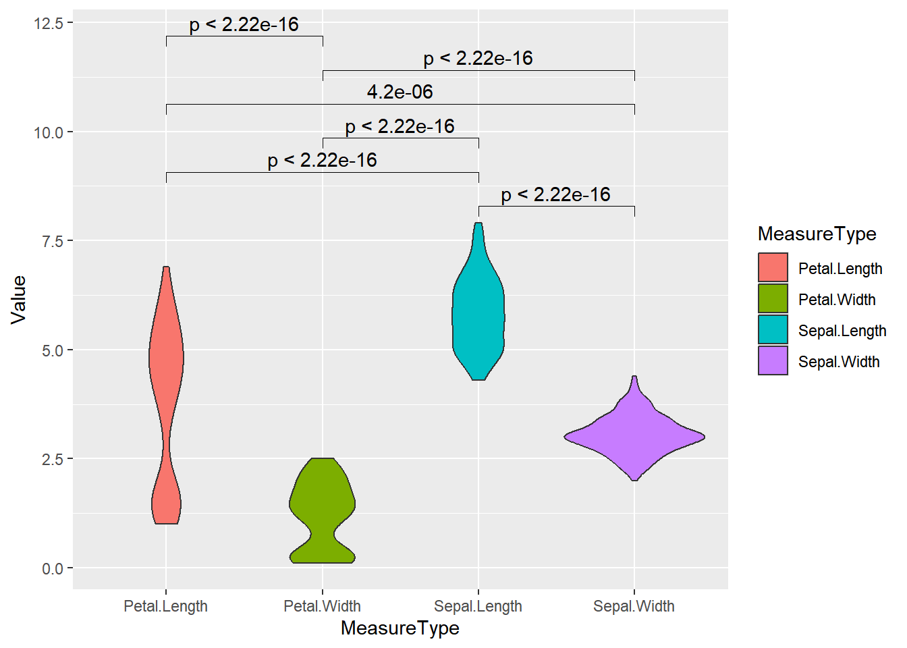
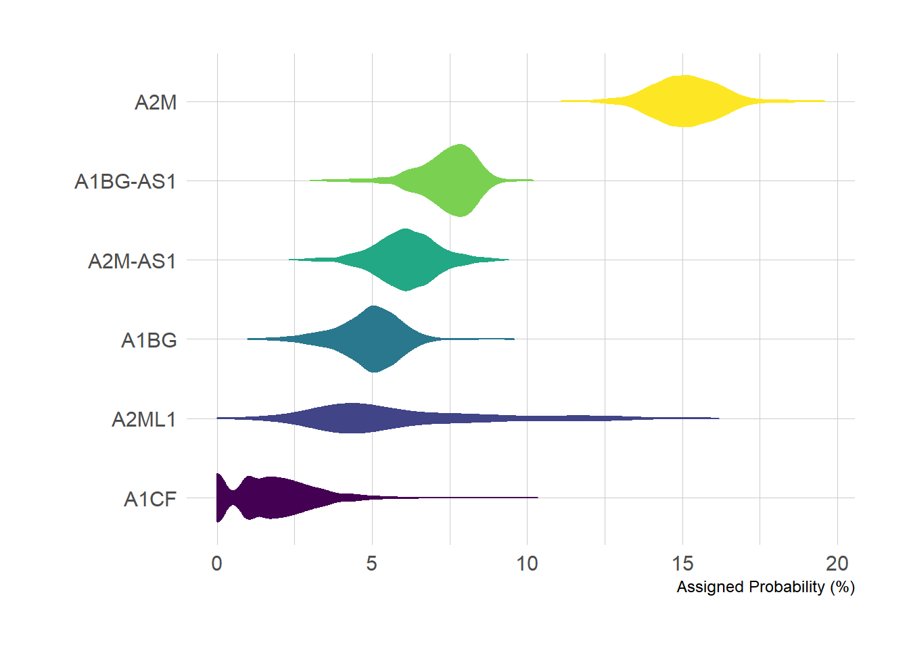
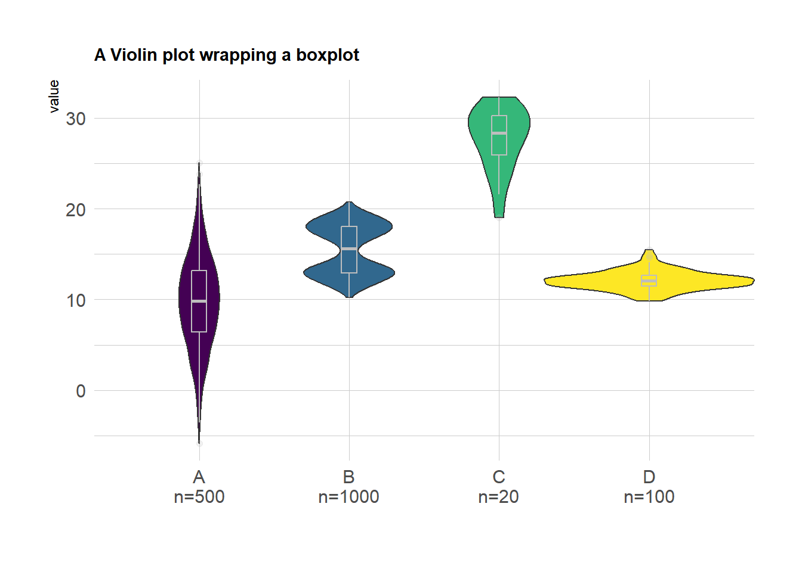
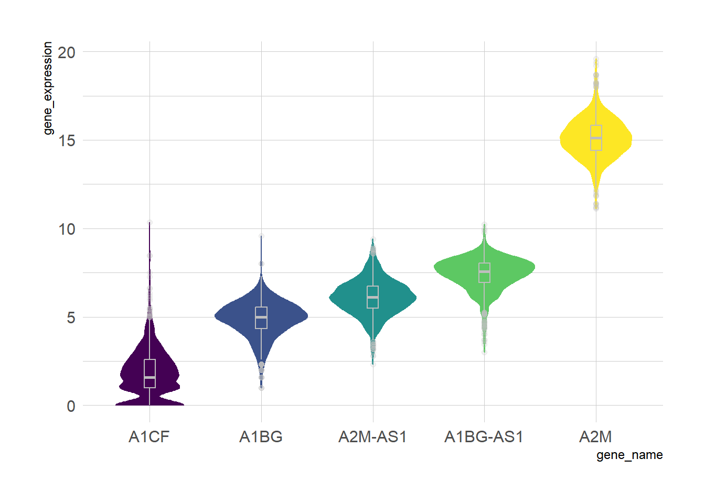
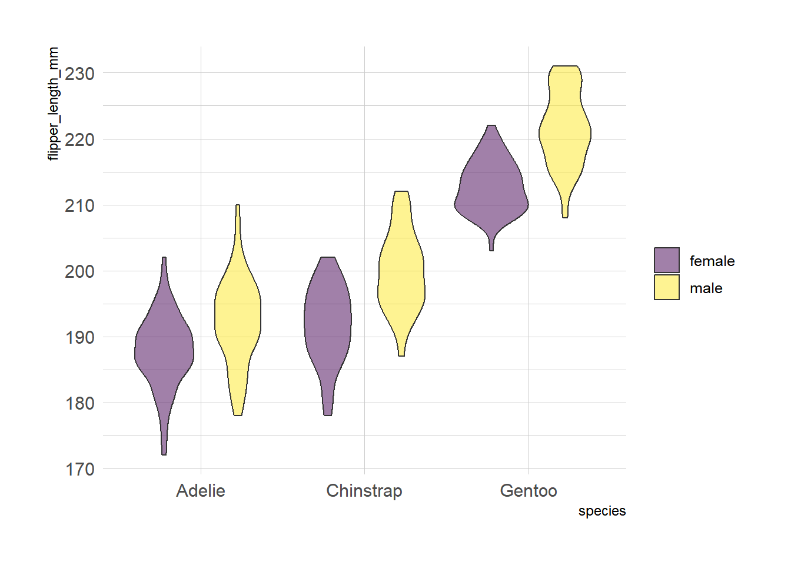
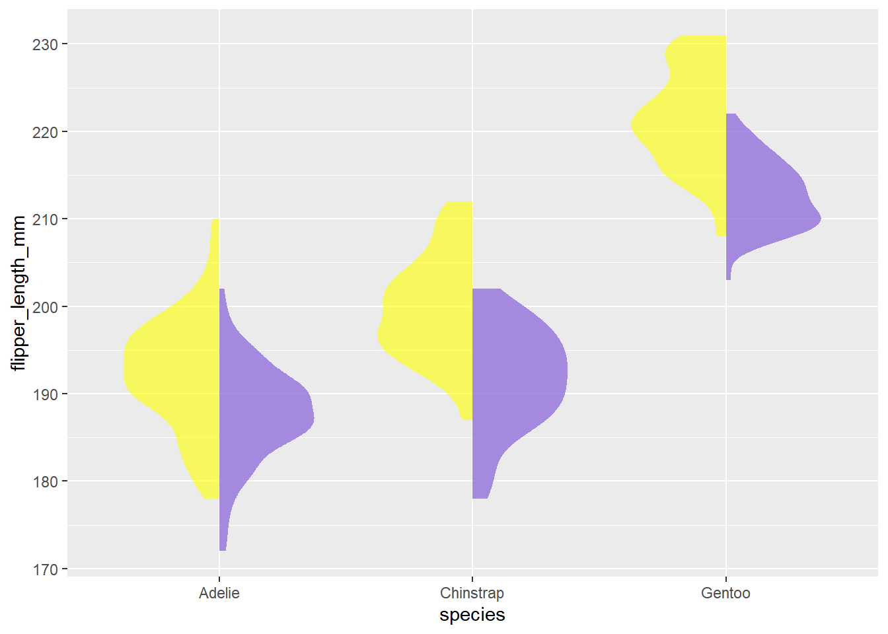
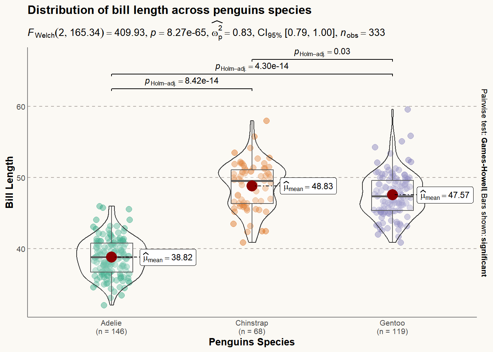

# 安装包
if (!requireNamespace("readr", quietly = TRUE)) {
install.packages("readr")
}
if (!requireNamespace("tidyr", quietly = TRUE)) {
install.packages("tidyr")
}
if (!requireNamespace("gghalves", quietly = TRUE)) {
install.packages("https://cran.r-project.org/src/contrib/Archive/gghalves/gghalves_0.1.4.tar.gz")
}
if (!requireNamespace("dplyr", quietly = TRUE)) {
install.packages("dplyr")
}
if (!requireNamespace("ggplot2", quietly = TRUE)) {
install.packages("ggplot2")
}
if (!requireNamespace("ggpubr", quietly = TRUE)) {
install.packages("ggpubr")
}
if (!requireNamespace("forcats", quietly = TRUE)) {
install.packages("forcats")
}
if (!requireNamespace("hrbrthemes", quietly = TRUE)) {
install.packages("hrbrthemes")
}
if (!requireNamespace("viridis", quietly = TRUE)) {
install.packages("viridis")
}
if (!requireNamespace("ggstatsplot", quietly = TRUE)) {
install.packages("ggstatsplot")
}
if (!requireNamespace("palmerpenguins", quietly = TRUE)) {
install.packages("palmerpenguins")
}
# 加载包
library(readr)
library(tidyr)
library(ggplot2)
library(ggpubr)
library(dplyr)
library(gghalves)
library(forcats)
library(hrbrthemes)
library(viridis)
library(ggstatsplot)
library(palmerpenguins)小提琴图
小提琴图是一种基于密度图和箱线图的可视化方式，它能够展示数据的分布情况，包括中位数、四分位数、最大值、最小值等信息。常用于比较不同组之间的数据分布情况，它的可视化效果比箱线图更加直观，能够更好地展示数据的特点。
- 箱型组件：白点/线代表中位数，黑条显示四分位距。
- 核密度组件：展现不同位置的数据点密度，揭示数据聚类模式。
示例

环境配置
系统要求： 跨平台（Linux/MacOS/Windows）
编程语言：R
依赖包：
readr;tidyr;ggplot2;dplyr;gghalves;forcats;hrbrthemes;viridis;ggstatsplot;palmerpenguins
sessioninfo::session_info("attached")Warning in system2("quarto", "-V", stdout = TRUE, env = paste0("TMPDIR=", :
running command '"quarto"
TMPDIR=C:/Users/97539/AppData/Local/Temp/Rtmp4sKIAD/file2654693d2db6 -V' had
status 1─ Session info ───────────────────────────────────────────────────────────────
setting value
version R version 4.5.1 (2025-06-13 ucrt)
os Windows 11 x64 (build 22631)
system x86_64, mingw32
ui RTerm
language (EN)
collate Chinese (Simplified)_China.utf8
ctype Chinese (Simplified)_China.utf8
tz Asia/Shanghai
date 2026-05-10
pandoc 3.9.0.2 @ D:/Program/PANDOC~1.2/ (via rmarkdown)
quarto NA @ D:\\Program Files\\R\\RStudio\\RESOUR~1\\app\\bin\\quarto\\bin\\quarto.exe
─ Packages ───────────────────────────────────────────────────────────────────
package * version date (UTC) lib source
dplyr * 1.2.1 2026-04-03 [1] CRAN (R 4.5.1)
forcats * 1.0.0 2023-01-29 [1] CRAN (R 4.4.2)
gghalves * 0.1.4 2022-11-20 [1] CRAN (R 4.4.3)
ggplot2 * 4.0.2 2026-02-03 [1] CRAN (R 4.5.2)
ggpubr * 0.6.1 2025-06-27 [1] CRAN (R 4.4.3)
ggstatsplot * 0.13.1 2025-05-09 [1] CRAN (R 4.4.2)
hrbrthemes * 0.8.7 2024-03-04 [1] CRAN (R 4.4.3)
palmerpenguins * 0.1.1 2022-08-15 [1] CRAN (R 4.5.3)
readr * 2.2.0 2026-02-19 [1] CRAN (R 4.5.3)
tidyr * 1.3.2 2025-12-19 [1] CRAN (R 4.5.2)
viridis * 0.6.5 2024-01-29 [1] CRAN (R 4.4.2)
viridisLite * 0.4.3 2026-02-04 [1] CRAN (R 4.5.3)
[1] D:/Program Files/R/R-4.5.1/library
* ── Packages attached to the search path.
──────────────────────────────────────────────────────────────────────────────数据准备
我们使用内置的 R 数据集（iris、penguins）以及来自UCSC Xena DATASETS的TCGA-BRCA.htseq_counts.tsv数据集。所选基因仅用于演示目的。
# 从处理过的CSV文件加载TCGA-BRCA基因表达数据集
data_counts <- readr::read_csv("https://bizard-1301043367.cos.ap-guangzhou.myqcloud.com/TCGA-BRCA.htseq_counts_processed.csv")
# 加载内置R数据集iris
data_wide <- iris[ , 1:4] # 以iris数据前四列数据为例
# 加载内置R数据集penguins
data("penguins", package = "palmerpenguins")
data_penguins <- drop_na(penguins) # 去除缺失值
# 手动创建含分组值的演示数据集
data <- data.frame(
name=c( rep("A",500), rep("B",500), rep("B",500), rep("C",20), rep('D', 100) ),
value=c( rnorm(500, 10, 5), rnorm(500, 13, 1), rnorm(500, 18, 1), rnorm(20, 25, 4), rnorm(100, 12, 1) )
)
sample_size <- data %>%
group_by(name) %>%
summarize(num=n()) # 计算每组的样本量可视化
1. 基础小提琴图
示例 1: 基础小提琴图使用手动创建的数据集
# 基础小提琴图
p <- ggplot(data, aes(x=name, y=value, fill=name)) +
geom_violin()
p
示例 2: 基础小提琴图使用 iris 数据集
# 将 `iris` 数据集从宽格式转换为长格式。使用 gather 函数将每列中的数据收集到名为"MesureType"和"Val"的两个新列中，以便一行代表一个观测值。
data_long_iris <- data_wide %>%
gather(key = "MeasureType", value = "Value")
ggplot(data_long_iris, aes(x = MeasureType, y = Value, fill = MeasureType)) +
geom_violin() 
iris 数据集
示例 3: 基础小提琴图使用 TCGA-BRCA 基因表达数据集
example_counts1 <- data_counts[1:5,] %>%
gather(key = "sample",value = "gene_expression",3:1219) # 选择五个示例基因进行可视化：A1BG、A1BG-AS1、A1CF、A2M 和 A2M-AS1。
ggplot(example_counts1, aes(x=gene_name, y=gene_expression, fill=gene_name)) +
geom_violin()
TCGA-BRCA 基因表达数据集
示例 4： 基础小提琴图组间差异显著性并标注
# 将数据进行整理和分组
data_long_iris <- data_wide %>%
gather(key = "MeasureType",
value = "Value")
# 绘制基础小提琴图
p <- ggplot(data_long_iris,
aes(x = MeasureType,
y = Value,
fill = MeasureType)) +
geom_violin()
# 将分组提取和去重
groups <- length(unique(data_long_iris$MeasureType))
if (groups == 2) {
p <- p +
stat_compare_means(
method = "wilcox.test", # c("t.test", "wilcox.test")
paired = FALSE,
method.args = list(),
ref.group = NULL,
comparisons = NULL,
hide.ns = FALSE,
label.sep = ", ",
label = "p.format", # c("p.signif", "p.format")
label.x.npc = "left",
label.y.npc = "top",
label.x = NULL,
label.y = NULL,
vjust = 0,
tip.length = 0.03,
bracket.size = 0.3,
step.increase = 0.1,
symnum.args = list(),
geom = "text",
position = "identity",
na.rm = FALSE,
show.legend = NA,
inherit.aes = TRUE
)
} else if (groups > 2) {
p <- p +
stat_compare_means(
method = "wilcox.test", # c("t.test", "wilcox.test")
paired = FALSE,
method.args = list(),
ref.group = NULL,
# 对于多个分组比较进行两两比较
comparisons = combn(unique(as.character(data_long_iris$MeasureType)), 2, simplify = FALSE),
hide.ns = FALSE,
label.sep = ", ",
label = "p.format", # c("p.signif", "p.format")
label.x.npc = "left",
label.y.npc = "top",
label.x = NULL,
label.y = NULL,
vjust = 0,
tip.length = 0.03,
bracket.size = 0.3,
step.increase = 0.1,
symnum.args = list(),
geom = "text",
position = "identity",
na.rm = FALSE,
show.legend = NA,
inherit.aes = TRUE
)
}
p
2. 反转小提琴图
我们可以通过 coord_flip() 实现x、y轴的翻转。
example_counts2 <- data_counts[1:6,] %>%
gather(key = "sample",value = "gene_expression",3:1219) %>%
mutate(gene_name= fct_reorder(gene_name,gene_expression ))
ggplot(example_counts2, aes(x=gene_name, y=gene_expression, fill=gene_name, color=gene_name)) +
geom_violin() +
scale_fill_viridis(discrete=TRUE) +
scale_color_viridis(discrete=TRUE) +
theme_ipsum() + # 改善主题外观
theme(legend.position="none" ) +
coord_flip() + # 翻转 x 轴和 y 轴
xlab("") +
ylab("Assigned Probability (%)")
TCGA-BRCA 数据集
3. 箱线小提琴图
在实际可视化应用中，我们可以通过geom_boxplot()在小提琴图中添加箱线图，便于更加直观的比较数据。
example_data <- data %>%
left_join(sample_size) %>%
mutate(myaxis = paste0(name, "\n", "n=", num)) # 创建`myaxis`变量以在 x 轴上显示样本大小。
ggplot(example_data, aes(x=myaxis, y=value, fill=name)) +
geom_violin(width=1.4) +
geom_boxplot( width=0.1,color="grey", alpha=0.2) + # 绘制箱线图。较小的宽度值会使箱线图位于小提琴图内。
scale_fill_viridis(discrete = TRUE) +
theme_ipsum() + # 美化绘图
theme(
legend.position="none",
plot.title = element_text(size=11)
) +
ggtitle("A Violin plot wrapping a boxplot") + # 设置标题
xlab("")
使用 TCGA-BRCA 基因表达数据绘制的带有箱线图的小提琴图
example_counts3 <- data_counts[1:5,] %>%
gather(key = "sample", value = "gene_expression",3:1219) %>%
mutate(gene_name= fct_reorder(gene_name,gene_expression ))
ggplot(example_counts3, aes(x=gene_name, y=gene_expression, fill=gene_name, color=gene_name)) +
geom_violin() +
geom_boxplot( width=0.1,color="grey", alpha=0.2)+
scale_fill_viridis(discrete=TRUE) +
scale_color_viridis(discrete=TRUE) +
theme_ipsum() + # 美化绘图
theme(legend.position="none" ) 
TCGA-BRCA 基因表达数据绘制的带有箱线图的小提琴图
4. 分组小提琴图
在基础小提琴图的基础上，我们可以通过设置fill值来实现组内比较。
下面的示例演示了如何使用fill属性进行组内比较。本例中使用了penguins数据集。x 变量代表物种，fill=sex创建了组内分类，以可视化每个物种内按性别分组的鳍状肢长度比较。
ggplot(data_penguins, aes(fill=sex, y=flipper_length_mm, x=species)) + # 使用X作为主分类，fill为组内分类
geom_violin(position="dodge", alpha=0.5, outlier.colour="transparent") +
scale_fill_viridis(discrete=T, name="") +
theme_ipsum() 
penguins 数据集
5. 半分小提琴图
半分小提琴图可以用简便的方式展现大量信息，我们可以用geom_half_violin函数分别绘制两个group.
在下面的例子中，我们通过在图的两侧绘制雌性和雄性企鹅来可视化不同物种和性别的企鹅的鳍状肢长度。
# 分离雌性企鹅和雄性企鹅的数据
data_female <- data_penguins %>% filter(sex == "female")
data_male <- data_penguins %>% filter(sex == "male")
# 绘制半分小提琴图（右侧为雌性，左侧为雄性）
ggplot() +
geom_half_violin(
data = data_female,
aes(y = flipper_length_mm, x = species),
position = position_dodge(width = 1),
scale = 'width',
colour = NA,
fill = "#9370DB",
alpha = 0.8, ## 设置透明度
side = "r"
) +
geom_half_violin(
data = data_male,
aes(y = flipper_length_mm, x = species),
position = position_dodge(width = 1),
scale = 'width',
colour = NA,
fill = "#FFFF00",
alpha = 0.6,
side = "l"
)
penguins 数据集
6. 使用ggstatsplot包绘制小提琴图
ggstatsplot包扩展了ggplot2，添加了强大的统计可视化功能。ggbetweenstats()函数允许创建组合小提琴图、箱线图和散点图。
在以下示例中，我们使用penguins数据集可视化了不同企鹅物种喙长的分布。我们使用theme()函数进一步增强了绘图的美观性。
plt <- ggbetweenstats(
data = data_penguins,
x = species,
y = bill_length_mm
) +
# 美化
labs( ## 添加标签和标题
x = "Penguins Species",
y = "Bill Length",
title = "Distribution of bill length across penguins species"
) +
theme(
axis.ticks = element_blank(),
axis.line = element_line(colour = "grey50"),
panel.grid = element_line(color = "#b4aea9"),
panel.grid.minor = element_blank(),
panel.grid.major.x = element_blank(),
panel.grid.major.y = element_line(linetype = "dashed"),
panel.background = element_rect(fill = "#fbf9f4", color = "#fbf9f4"),
plot.background = element_rect(fill = "#fbf9f4", color = "#fbf9f4")
)
plt
ggstatsplot包绘制小提琴图
应用场景
1. 基础小提琴图

图 11 e 图为七种癌症组织与对应正常组织中 circRNA 相对丰度的小提琴图 [1]。
2. 分组小提琴图

上示小提琴图分析比较了 A549 单细胞中 31 种蛋白质和 mRNA 的水平和分布 [2]。
3. 半分小提琴图

图 13 E 图利用半分小提琴图分析 WT 克隆在 WT 肠道（左）或 M−/+ 肠道（中图和右图）中的克隆大小分布 [3]。
4. 箱线小提琴图

图 14 D 图展示附着在基质上 (noise) 和水中 (stimulation ) 的液滴的预期中值 MSD 和分布，以及纳米级的 RMS 位移 [4].
参考文献
[1] Zheng Q, Bao C, Guo W, Li S, Chen J, Chen B, Luo Y, Lyu D, Li Y, Shi G, Liang L, Gu J, He X, Huang S. Circular RNA profiling reveals an abundant circHIPK3 that regulates cell growth by sponging multiple miRNAs. Nat Commun. 2016 Apr 6;7:11215. doi: 10.1038/ncomms11215. PMID: 27050392; PMCID: PMC4823868.
[2] Gong H, Wang X, Liu B, Boutet S, Holcomb I, Dakshinamoorthy G, Ooi A, Sanada C, Sun G, Ramakrishnan R. Single-cell protein-mRNA correlation analysis enabled by multiplexed dual-analyte co-detection. Sci Rep. 2017 Jun 5;7(1):2776. doi: 10.1038/s41598-017-03057-5. PMID: 28584233; PMCID: PMC5459813.
[3] Kolahgar G, Suijkerbuijk SJ, Kucinski I, Poirier EZ, Mansour S, Simons BD, Piddini E. Cell Competition Modifies Adult Stem Cell and Tissue Population Dynamics in a JAK-STAT-Dependent Manner. Dev Cell. 2015 Aug 10;34(3):297-309. doi: 10.1016/j.devcel.2015.06.010. Epub 2015 Jul 23. PMID: 26212135; PMCID: PMC4537514.
[4] Cribb JA, Osborne LD, Beicker K, Psioda M, Chen J, O’Brien ET, Taylor Ii RM, Vicci L, Hsiao JP, Shao C, Falvo M, Ibrahim JG, Wood KC, Blobe GC, Superfine R. An Automated High-throughput Array Microscope for Cancer Cell Mechanics. Sci Rep. 2016 Jun 6;6:27371. doi: 10.1038/srep27371. PMID: 27265611; PMCID: PMC4893602.
[5] Wickham H, Vaughan D, Girlich M (2024). tidyr: Tidy Messy Data. R package version 1.3.1, https://CRAN.R-project.org/package=tidyr.
[6] H. Wickham. ggplot2: Elegant Graphics for Data Analysis. Springer-Verlag New York, 2016.
[7] Wickham H, François R, Henry L, Müller K, Vaughan D (2023). dplyr: A Grammar of Data Manipulation. R package version 1.1.4, https://CRAN.R-project.org/package=dplyr.
[8] Tiedemann F (2022). gghalves: Compose Half-Half Plots Using Your Favourite Geoms. R package version 0.1.4, https://CRAN.R-project.org/package=gghalves.
[9] Wickham H (2023). forcats: Tools for Working with Categorical Variables (Factors). R package version 1.0.0, https://CRAN.R-project.org/package=forcats.
[10] Rudis B (2024). hrbrthemes: Additional Themes, Theme Components and Utilities for ‘ggplot2’. R package version 0.8.7, https://CRAN.R-project.org/package=hrbrthemes.
[11] Simon Garnier, Noam Ross, Robert Rudis, Antônio P. Camargo, Marco Sciaini, and Cédric Scherer (2024). viridis(Lite) - Colorblind-Friendly Color Maps for R. viridis package version 0.6.5.
[12] Patil, I. (2021). Visualizations with statistical details: The ‘ggstatsplot’ approach. Journal of Open Source Software, 6(61), 3167, doi:10.21105/joss.03167
[13] Horst AM, Hill AP, Gorman KB (2020). palmerpenguins: Palmer Archipelago (Antarctica) penguin data. R package version 0.1.0. https://allisonhorst.github.io/palmerpenguins/. doi: 10.5281/zenodo.3960218.